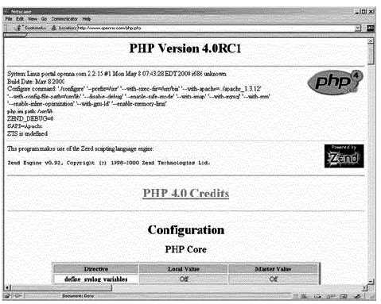
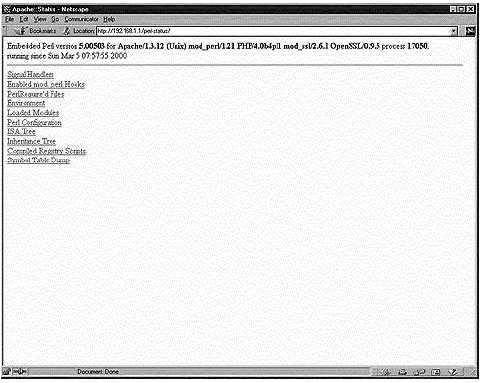
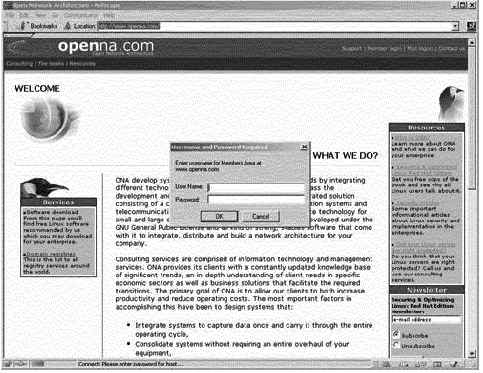

L
i n u x P a r
k
при
поддержке ВебКлуба |
Глава 19 Серверное программное обеспечение (Веб сервис) (Часть
2)В этой главе
Linux MM –
библиотека совместно используемой памяти
Веб-сервер
Apache
Конфигурации
PHP4 – язык
скриптов со стороны сервера
Perl
библиотека – CGI.pm
Организация
защиты Apache
Запуск Apache
с использованием chroot.
Оптимизация
Apache
|
|
Если вы планируете использовать PHP4 с вашим веб сервером
Apache не забудьте включить в ваш файл “/etc/httpd/conf/httpd.conf” следующие
строки, включающие эту возможность:
Шаг 1
Редактируйте файл httpd.conf file (vi
/etc/httpd/conf/httpd.conf) и добавьте следующие строки между тэгами секции
<IfModule mod_mime.c> и </IfModule>:
AddType application/x-httpd-php .php
AddType application/x-httpd-php
.php3
AddType application/x-httpd-php-source .phps
Шаг 2
Вы должны перезапустить веб сервер Apache, чтобы изменения
вступили в силу:
[root@deep /]# /etc/rc.d/init.d/httpd restart
Shutting down http: [ OK ]
Starting httpd: [ OK ]
Шаг 3
После того, как вышеприведенные строки были включены в файл
“httpd.conf”, вы должны тестировать новую возможность PHP4. Мы создадим
небольшой PHP файл с именем “php.php” в нашем DocumentRoot, и затем попробуем
загрузить этот документ в наш броузер, чтобы убедиться, что PHP4 работает на
сервере.
Создайте файл php.php в DocumentRoot (touch
/home/httpd/ona/php.php) и внесите в него следующие строки:
<body bgcolor="#FFFFFF">
<?php phpinfo()?>
</body>
ЗАМЕЧАНИЕ. Эти строки будут информировать программу PHP4
вывести различные части информации о конфигурации нашего Linux
сервера.
Шаг 4
Сейчас, в броузере введите следующий адрес:
http://my-web-server/php.php Где <my-web-server> это адрес вашего веб
сервера Apache, а <php.php> - это имя PHP документа, который мы
создали.

Если все выглядит примерно как на рисунке, то поздарвляем! Ваш
модуль PHP работает.
Perl модуль Devel::Symdump
Если вы планируете использовать модуль mod_perl с вашим
сервером Apache, вы можете захотеть установить небольшой perl модуль
“Devel::Symdump”. Этот модуль, разработанный третьими лицами, позволит вам
проверять таблицу идентификаторов perl и иерархии классов в запускаемых
программах. Чтобы создать и инсталлировать его выполните следующие шаги.
Пакеты.
Домашняя страница: http://www.perl.com/CPAN/modules/by-module/Devel/
Вы должны
скачать: Devel-Symdump-2_00_tar.gz
Devel-Symdump версия 2.00
[root@deep /]# cp Devel-Symdump-version.tar.gz
/var/tmp/
[root@deep /]# cd /var/tmp/
[root@deep tmp]# tar xzpf
Devel-Symdump-version.tar.gz
Шаг 1
Перейдите в новый каталог Devel-Symdump и введите следующие
команды для компиляции и инсталляции модуля на ваш Linux сервер:
[root@deep Devel-Symdump-2.00]# perl
Makefile.PL
[root@deep Devel-Symdump-2.00]# make
[root@deep
Devel-Symdump-2.00]# make test
[root@deep Devel-Symdump-2.00]# make
install
Шаг 2
Как только модуль проинсталлирован на вашей системе, вы должны
включить в ваш файл “/etc/httpd/conf/httpd.conf” следующие строки, чтобы
просмотреть статус различных модулей Perl на вашем сервере:
Редактируйте файл httpd.conf (vi /etc/httpd/conf/httpd.conf) и
добавьте следующие строки:
<Location /perl-status>
SetHandler perl-script
PerlHandler Apache::Status
Order deny,allow
Deny from all
Allow from 192.168.1.0/24
</Location>
Шаг 3
Перезапустите веб сервер Apache, чтобы изменения вступили в
силу:
[root@deep /]# /etc/rc.d/init.d/httpd restart
Shutting down http: [ OK ]
Starting httpd: [ OK ]
Шаг 4
В заключении, мы должны тестировать новый модуль Devel-Symdump,
чтобы убедиться, что мы можем смотреть статус разных модулей Perl. Для этого
введите в окне броузера следующий адрес: http://my-web-server/perl-status/. Где
<my-web-server> - это адрес веб сервера.

Очистка после работы
[root@deep /]# cd
/var/tmp
[root@deep tmp]# rm -rf Devel-Symdump.version/
Devel-Symdump-version.tar.gz
Инсталлированные файлы> /usr/lib/perl5/man/man3/Devel::Symdump.3
> /usr/lib/perl5/site_perl/5.005/i386-linux/auto/Devel
> /usr/lib/perl5/site_perl/5.005/i386-linux/auto/Devel/Symdump
> /usr/lib/perl5/site_perl/5.005/i386-linux/auto/Devel/Symdump/.packlist
> /usr/lib/perl5/site_perl/5.005/Devel
> /usr/lib/perl5/site_perl/5.005/Devel/Symdump
> /usr/lib/perl5/site_perl/5.005/Devel/Symdump/Export.pm
> /usr/lib/perl5/site_perl/5.005/Devel/Symdump.pm
CGI.pm – это Perl5 библиотека, написанная для использования в
CGI скриптах. Старая версия этой программы существует по умолчанию на вашей
системе, но она имеет ряд ошибок. Поэтому рекомендуется обновить вашу копию до
версии 2.56 и новее. Для обновления этого модуля выполните следующие шаги.
Пакеты
Домашняя страница CGI.pm:
http://stein.cshl.org/WWW/software/CGI/cgi_docs.html
Вы
должны скачать: CGI_pm_tar.gz
CGI.pm версия 2.56
[root@deep /]# cp CGI_pm_tar.gz /var/tmp/
[root@deep /]# cd
/var/tmp/
[root@deep tmp]# tar xzpf CGI_pm_tar.gz
Шаг
1
Первое, в должны проверить версию CGI.pm инсталлированной на
вашей системе. Для этого используйте следющую команду:
[root@deep]# perl -e 'use CGI; print
$CGI::VERSION."\n";'
2.46
Шаг 2
Перейдите в каталог CGI.pm и введите следующие команды на вашем
терминале для компиляции и инсталляции обновленной библиотеки на вашем Linux
сервере:
[root@deep CGI.pm-2.56]# perl
Makefile.PL
[root@deep CGI.pm-2.56]# make
[root@deep CGI.pm-2.56]# make
test
[root@deep CGI.pm-2.56]# make install
Очистка после работы
[root@deep /]# cd /var/tmp
[root@deep tmp]# rm -rf CGI.pm-version/
CGI_pm_tar.gz
Инсталлированные файлы. > /usr/lib/perl5/5.00503/CGI/Pretty.pm
> /usr/lib/perl5/5.00503/i386-linux/auto/CGI
> /usr/lib/perl5/5.00503/i386-linux/auto/CGI/.packlist
> /usr/lib/perl5/man/man3/CGI::Pretty.3
Изменение прав доступа к
некоторым важным файлам и каталогам для вашего веб сервера
Когда вы инсталлируете Apache на вашем сервере, некоторые файлы
и каталоги имеют слишком много прав установленных по умолчанию. Двоичная
программа “httpd” может быть установлена в режим только для чтения пользователю
“root”, и исполнения для владельца, группы и других пользователей. Каталоги
“/etc/httpd/conf” и “/var/log/httpd” не должны быть открыты для чтения, записи и
исполнения для других людей.
[root@deep /]# chmod
511 /usr/sbin/httpd
[root@deep /]# chmod 750 /etc/httpd/conf/
[root@deep
/]# chmod 750 /var/log/httpd/
Автоматическая индексация
Если вы включили автоматическую индексацию каталогов в вашем
конфигурационном файле, (IndexOptions в httpd.conf), тогда вы имеете проблему в
безопасности, так как любой запрос к каталогу, не имеющему индексного файла,
вызовет создания индекса всего того, что находится в каталоге. Во многих
случаях, вы можете хотеть, чтобы пользователи смотрели файлы, которые вы
специально создали для этого. Для отключения этой возможности, вам нужно удалить
право на чтение из каталога DocumentRoot (но не файлов внутри него).
[root@deep /]# cd /home/httpd/
[root@deep httpd]# chmod
311 ona
[root@deep httpd]# ls -la
d-wx--x--x 13 webadmin webadmin 1024
Jul 28 08:12 ona
Сейчас, после этой модификации, любой запрос к защищенному
каталогу должен получить сообщение об ошибке:
Forbidden
You don't have permission to access “/ona/” on this
server.
ЗАМЕЧАНИЕ. “ona” – это DocumentRoot (каталог в котором
вы храните ваши документы).
Создание файла с паролями .dbmpasswd для
аутентификации пользователей.
Этот шаг необходим если вы планируете использовать
аутентификацию пользователей для доступа к файлам на вашем веб сервере. В Apache
существует много опций для защиты вашего сайта именами и паролями.
Шаг
1
Утилита “dbmmanage” из Apache может быть использована для
создания и обновления имен и паролей HTTP пользователей. Этот метод использует
DBM формат файла, который представляет из себя наиболее быстрый механизм, когда
необходимо управлять тысячью пользователями в файле с паролями. Первое,
необходимо изменить права доступа к этой программе на (0750/-rwxr-x- --), запись
только для “root”, чтение и исполнение для группы и ничего для других
пользователей.
Для изменнеия прав доступа используйте следующую
команду:
[root@deep /]# chmod 750
/usr/bin/dbmmanage
Для создания имени пользователя и пароля используйте
команду:
[root@deep /]# /usr/bin/dbmmanage
/etc/httpd/.dbmpasswd adduser username
New password:
Re-type new
password:
User username added with password encrypted to
l4jrdAL9MH0K.
где </etc/httpd> это месторасположение файла с паролями,
<.dbmpasswd> - имя файла с паролями и <username> имя пользователя,
которое мы хотим добавить в “.dbmpasswd”.
Шаг 2
Если вы используете утилиту “dbmmanage” для создания паролей и
имен пользователей, не забудьте включить в ваш конфигурационный файл
“/etc/httpd/conf/httpd.conf” информацию о части вашего веб сервера, которую вы
хотите защитить аутентификацией пользователей по паролю:
Редактируйте файл httpd.conf (vi /etc/httpd/conf/httpd.conf) и
добавьте следующие строки для защиты “приватного” каталога вашего веб сервера
“ona”:
<Directory "/home/httpd/ona/private">
Options None
AllowOverride AuthConfig
AuthName "restricted stuff"
AuthType Basic
AuthDBUserFile /etc/httpd/.dbmpasswd
require valid-user
</Directory>
Путь </home/httpd/ona/private> определяет защищаемый
каталог, а </etc/httpd/.dbmpasswd> определяет месторасположение файла с
паролями. ЗАМЕЧАНИЕ. Модуль аутентификации по DB файлам с паролями вы должны
включить во время конфигурирования вашего веб сервера Apache, использовав
параметр “--add-module=src/modules/standard/mod_auth_db.c”. Смотрите
документацию на Apache для большей информации.
Шаг 3
Вы должны перезагрузить веб сервер, чтобы изменения вступили в
силу:
[root@deep /]# /etc/rc.d/init.d/httpd restart
Shutting down http: [ OK ]
Starting httpd: [ OK ]
Шаг 4
В заключение, мы должны тестировать новый защищаемый каталог
(private). Для проверки введите в окне броузера следующий адрес: http://my-web-
server/private/. <my-web-server> - адрес вашего веб сервера,
</private/> - это каталог, который вы защищаете.

Иммунизация важного
конфигурационного файла “httpd.conf”
Как мы уже знаем, бит “постоянства” может быть использован для
предотвращения удаления, переписывания или создания символической ссылки к
файлу. Так как ваш файл “httpd.conf” уже настроен, то его можно защитить
подобным битом:
[root@deep /]# chattr +i
/etc/httpd/conf/httpd.conf